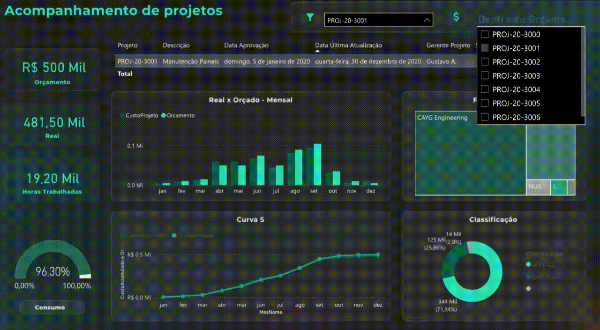
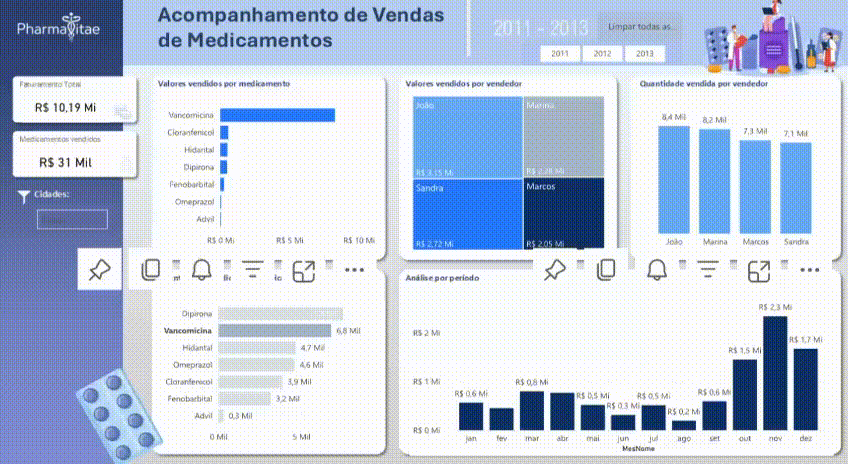
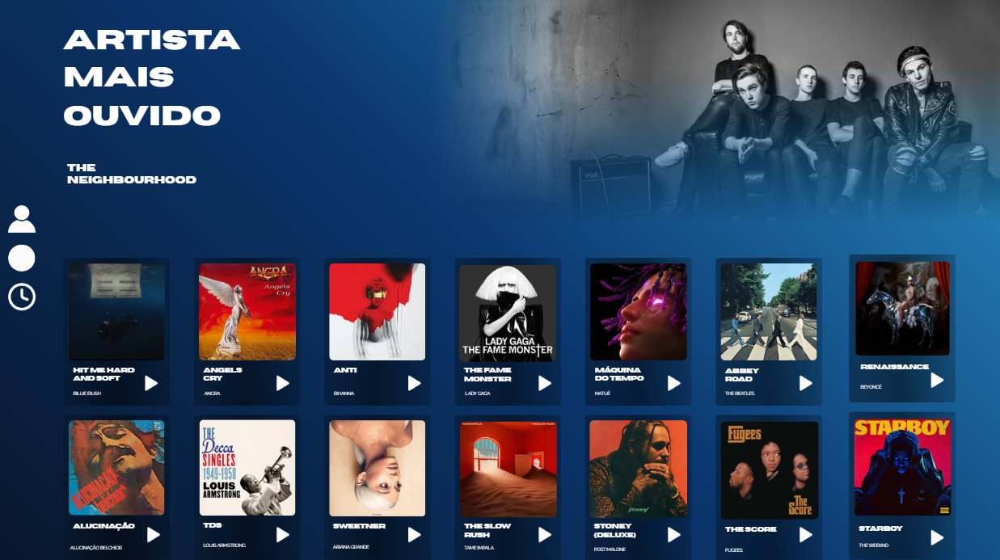

Dash Projetos
Dashboard de projetos de vendas com gestão completa de orçamentos, acompanhamento de negociações, controle de metas, funil comercial e indicadores estratégicos em tempo real.
➜
Desenvolvedor de dados focado em engenharia (SQL) e Business Intelligence (BI). Especialista em transformar volumes brutos de informação em dashboards visuais e insights claros para tomada de decisão.
Dashboard de projetos de vendas com gestão completa de orçamentos, acompanhamento de negociações, controle de metas, funil comercial e indicadores estratégicos em tempo real.
Dashboard de farmácia com gestão de vendas, estoque, metas e indicadores estratégicos em tempo real.
Sites criados no Canva com design moderno, visual profissional e foco em praticidade e resultados.
Plataforma de compras e vendas com gestão inteligente, praticidade e negociações em tempo real.
Um dashboard completo para gestão comercial de projetos de vendas. Desenvolvido para equipes que precisam de visibilidade total sobre o pipeline de negócios — do primeiro contato até o fechamento do contrato.


Dashboard operacional desenvolvido para redes de farmácia, unificando dados de vendas, estoque e desempenho em uma única tela. Permite gestores tomarem decisões rápidas com base em dados atualizados.
Criação de sites profissionais utilizando o Canva como plataforma de design e publicação. Uma solução ágil e visualmente impactante para clientes que precisam de presença digital rápida com alto padrão estético.


Plataforma completa de compras e vendas com gestão inteligente de produtos, estoque e negociações. Desenvolvida para facilitar o dia a dia de vendedores e compradores com uma interface ágil e dados em tempo real.